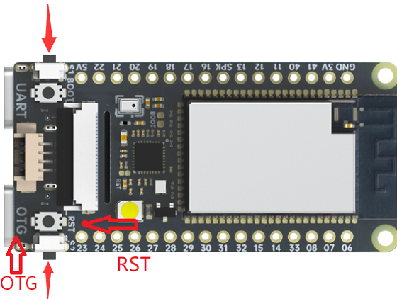
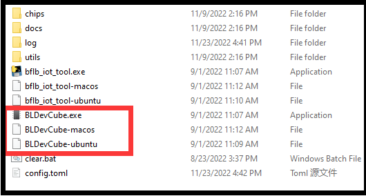
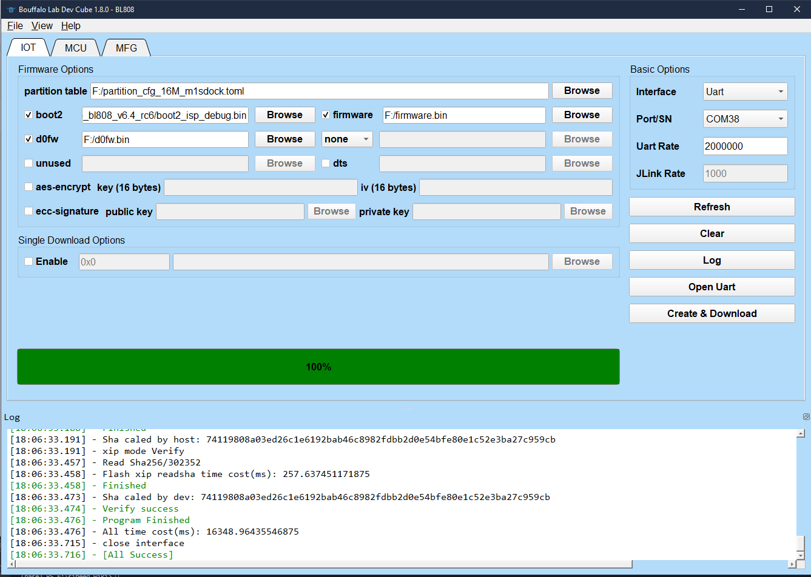
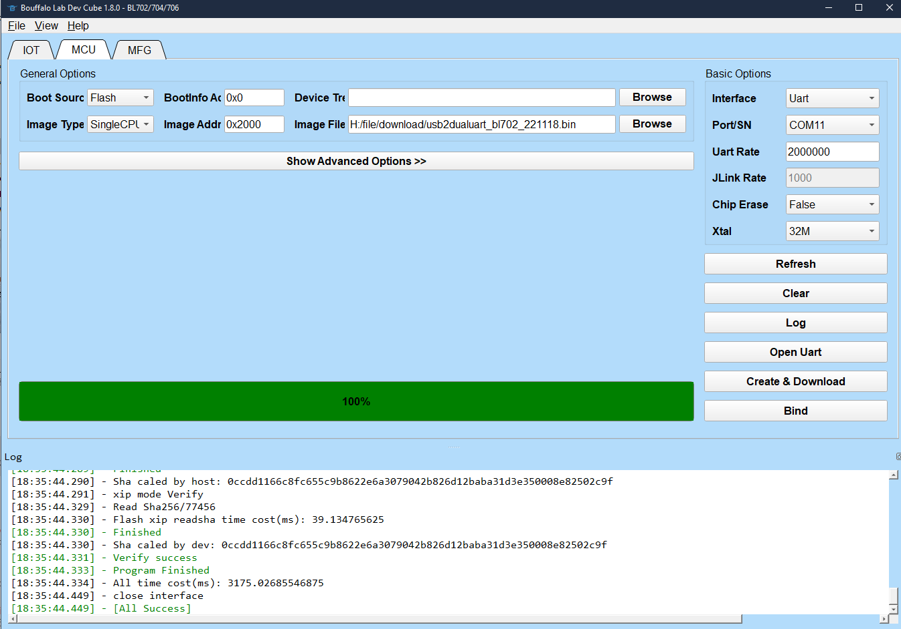

M1s DOCK 上手
更新历史
| 日期 | 版本 | 作者 | 更新内容 |
|---|---|---|---|
| 2022-11-23 | v0.1 | wonder |
|
M1s Dock 设计精巧，可以用来所很多有意思的事，这里简单说明一下一些使用方法。
初见
首次对 M1s Dock 板子上电，屏幕会显示摄像头所拍摄到的内容，且按两侧的按键显示屏上的数字会有变化。
U 盘烧录
推荐使用这种方法来进行烧录，主要用来给板子上的 C906 核心烧录运行程序。
先使用 TypeC 数据线将电脑与板子的 OTG 口连接起来，再同时按住板子上面两侧的按键（已经在下面图片中指明），然后按一下板子上的 RST 键就可以进入 U 盘烧录模式。
|  | 同时按住两侧的按键然后按一下 RST 键来复位板子，并让它进入 U 盘烧录模式 |
板子成功进入 U 盘烧录模式后在电脑上会显示出一个容量很小的磁盘，直接把固件 点我跳转部分例程固件 拖拽进去即可完成烧录。文件存放进去后数秒后板子会重启，U 盘被弹出，表示烧录完成，看不到效果的话可以给板子重新插拔板子 USB 来完全重启一次再来查看烧录结果。

串口烧录
上面的 U 盘烧录方法适用于给 C906 核心烧录代码，当板子出现固件错误或者需要进行固件升级等操作时，我们需要通过串口来给板子烧录固件。
给 M1s 烧录
使用 TypeC 数据线将电脑与板子的 UART 口连接起来，此时电脑上会出现两个串口 （如果出现鼠标不能动的现象请拔掉 USB 并且查看 更新板载 bl702 固件 相关内容来修复问题)
给 M1s 烧录需要用到博流官方烧录工具，前往 https://dev.bouffalolab.com/download 下载名称为 Bouffalo Lab Dev Cube 的文件。解压后就得到了用来烧录板子的应用程序。

解压后的文件夹中主要关注 BLDevCube、 BLDevCube-macos 和 BLDevCube-ubuntu 三个文件，用于在不同系统启动这个烧录工具。

启动软件后选择 bl808 ，紧着这软件的 IOT 页面选择分区表文件点我下载（图里②）
 |
 |
选择完上面的分区表文件后，烧录工具的可选项就变多了，主要关注 boot2, firmware, d0fw 三项

上图中，boot2 是固定的，位于 BLDevCube\chips\bl808\builtin_imgs\boot2_isp_bl808_v6.4_rc6 目录下，就是在解压的烧录程序文件夹的子目录里面；firmware 是 E907 核心运行的固件 ；d0fw是 C906 核心运行的固件，前面的 U 盘烧录里面的固件就是给这个核心烧录的。E907 的固件文件和 C906 的固件文件均可以通过 M1s_dock example 来编译得到。
默认固件可以在 这里下载到
正确的选择固件后，在窗口右侧点击一下 Refresh 来刷新串口，正常情况有两个串口号相邻的串口可供选择，如果没有两个串口请参考下面的 烧录 BL702来查看解决方法。在双串口中需要选择串口号较大的那个。设置波特率 2000000。

点击下载后按住板子上的 BOOT 键和 RST 键， 然后先松开 RST 键再松开 BOOT 键来给板子烧录固件。
 |
 |
给板载 bl702 进行烧录
一般来说板子出问题才进行这里的烧录。
在给板子通电前按住板子上的 BOOT 按键，然后通过板子上的 UART USB 接口连接电脑，此时板载 bl702 进入下载模式，打开 BLDevCube 烧录软件，选择 BL702 芯片，在打开的软件界面选择 MCU 模式，接着可以在 这里 下载到 bl702 的固件，名称为 usb2dualuart_bl702 开头的就是我们需要烧录的文件。
 |
 |
点击 Refresh，选择唯一的串口（如果看到的不是唯一串口，记得是先按住 BOOT 键，再给板子上电），设置波特率 2000000， 点击下载烧录。

烧录结束后，重新插拔一次 USB 来重新启动 bl702 以应用新的固件。
